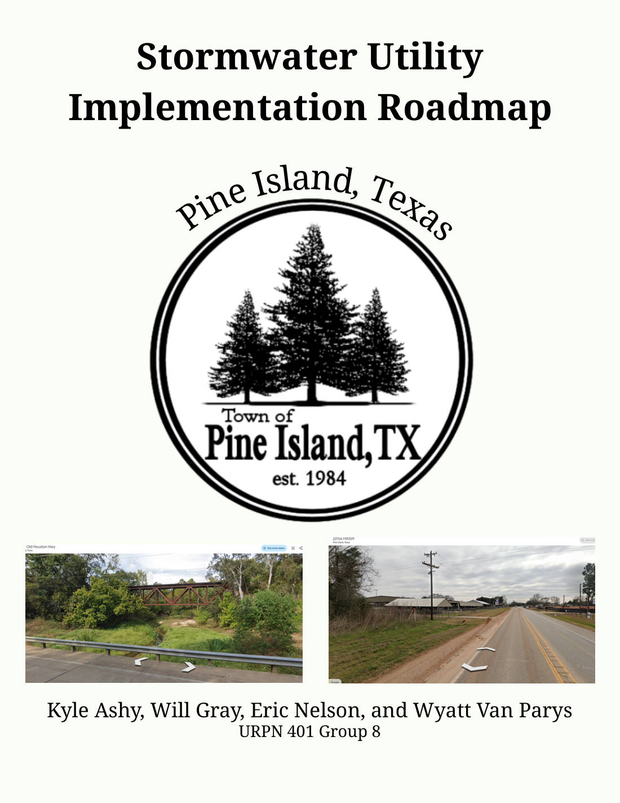

Planning · URPN 401, Group 8 · Spring 2026
Funding drainage that a small town cannot otherwise afford
A 58-page implementation roadmap for standing up a municipal stormwater utility in Pine Island, Texas - a dedicated, recurring funding source for a town whose drainage problems had no budget line to fix them.
The problem
Pine Island is a town of 1,187 people in Waller County, low density, sitting south of US Highway 290 between Waller and Hempstead. Roughly 12.6% of its properties are at risk of flooding over the next thirty years — below the Texas average of 24.3%, but not nothing: after Hurricane Harvey, 16 of the town’s 452 properties were damaged once the water receded.
The real problem is not the water, it is the budget. Drainage work competed with everything else in the General Fund, which meant it was never reliably funded and improvements never got made. And the pressure is about to increase: Waller County’s population is projected to double over ten years, from 60,000 to 120,000, with most of that growth coming off Highway 290 toward Highway 6.
A stormwater utility solves this by creating a dedicated, recurring funding source that cannot be spent on anything else.
My role
One of four on URPN 401 Group 8, with Kyle Ashy, Eric Nelson and Wyatt Van Parys. The 58-page roadmap was produced jointly — case study research, financial analysis, the draft ordinance, the implementation timeline and the final document were assembled as a team rather than split into individually credited sections.
Data and method
The method was deliberately not to invent a scheme from first principles. Stormwater utilities are a well-trodden path in Texas, so the roadmap is built on what has already worked elsewhere and then adapted to a town of this size.
Four case studies
- Seguin — the fee-structure precedent. Fees assessed on impervious surface area because it correlates with runoff generation, billed in Equivalent Residential Units where 1 ERU = 4,000 sq ft of residential impervious area, modelled at low, middle and high scenarios of $8.60, $11.50 and $14.50 per ERU.
- Bellaire — a city facing the same squeeze at larger scale: rising construction, maintenance and rehabilitation costs pressing on the General Fund with no dedicated mechanism to meet them.
- Little Elm — studied as a business model, mapping the partners, activities, resources and channels a working utility actually needs.
- Ingram and Kerr County — the cautionary one, covered below.
What the roadmap proposes
- An ERU-based rate structure — residential properties at a flat rate of about $4.00 per month, commercial properties scaled by measured impervious area, so a property’s bill tracks its own contribution to runoff.
- A draft ordinance establishing the utility under the Public Works Department, with drainage plan review for new development, rate adjustment provisions and a property-owner appeals process.
- A modelled operating budget of roughly $333,000 a year — around $170,000 in salaries, $88,000 in maintenance, $21,000 in professional services, $14,000 in supplies and fuel, and $40,000 in one-time capital costs.
- An implementation timeline running from policy research and ordinance drafting through stakeholder engagement, adoption, fee and billing start-up, and on to construction.
- Performance metrics for both operations and capital work — drainage assets inspected, percentage of maintenance requests filled, average response time to service requests, projects completed annually, and the share delivered on schedule and on budget.

What I found
Impervious area is the defensible basis for the fee. Every case study that worked arrived at the same answer, and for the same reason: it correlates with runoff, so the charge is proportional to what a property actually contributes to the problem. That is what makes it survivable at a public hearing, where a flat tax is not.
The goal is an enterprise fund, not a subsidy. In the cities that succeeded, utility fees cover staff salaries and routine maintenance directly. The long-term target for Pine Island is the same — a fully self-sustaining fund where operations, maintenance and future capital improvements are all met from revenue the utility generates.
The Kerr County case study is the one worth reading. Their stated aim was to “update the currently outdated system” — a goal vague enough that no specific work followed from it. At the time of the flood the county had only six water level gauges along the Guadalupe River, which made reporting slow and inaccurate. The improvement they wanted could not be implemented because the budget was small and state funding did not come through. A vague goal and no dedicated revenue produce exactly nothing, which is the argument for this roadmap in a single example.
What I would do differently
Apply the Kerr County lesson to our own document. We identified that vague goals are why projects stall, then wrote several implementation steps that are themselves closer to intentions than to targets. Attaching a specific, measurable figure and a date to each step would make the roadmap harder to quietly abandon.
Model the revenue against the budget explicitly. The document carries a proposed rate of about $4.00 per ERU and a modelled operating cost of roughly $333,000 a year, but it does not put them on the same page and show the gap. For a town of 1,187 people and 452 properties, whether that rate actually funds that budget is the first question a council member will ask.
Test the rate against the growth projection. Waller County is expected to double in population within ten years. A rate set for today’s town and a rate set for the town it is about to become are different numbers, and the roadmap would be stronger for saying which one it has chosen.
- Document
- 58pages
- Case studies
- 4peer cities
- Residential rate
- $4.00per ERU, monthly
- Annual budget
- $333kmodelled operating cost
- Population served
- 1,187452 properties